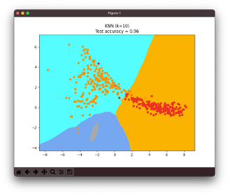

使用 MEMS 感測器實現以 IoT 為基礎的預測性維護
D0748284 楊孟軒
1 Introduction
1.1 Motivation
隨著工業機械能夠完成越來越複雜化、自動化的任務，這樣的發展意味著機械各部件得承受更為複雜的運作模式，也就是說，在該作業環境可能易遭受高溫高壓和高運轉量的困擾。因此，故障是不可避免的問題。由於機械設備故障容易導致經濟及能源消耗的損失，故機械狀態監控的需求變得日趨重要。
簡單來說：大專生計劃錢都拿了現在逃不掉了 嗚嗚
1.2 Task Definition
- 利用遷入式設備搜集工具機運作數據
- 輕量化模型並直接在遷入式設備部署
- 考慮到多個axis交互關係分析軸承運作狀態
2 Dataset description
- IMS dataset(aka NASA Bearing Dataset)
- 實際設備搜集資料
2.1 Dataset description
| IMS | 實際設備搜集資料 | |
|---|---|---|
| Channels | 4 | 3 |
| Number of files | $\approx 20M$ | $\geq20k$ |
| Window size(frequence) | 10240 | 4096 |
| setup |  |
 |
3 Learning techniques
3.1 feature extraction
將震動數據依照$window\ size$ 分開 並分別計算個別的時域特徵($time domain features$)
- $\mathrm{RMS} =\sqrt{(\frac{1}{N})\sum_{i=1}{N}(x){2}}$
- $\mathrm{VAR} = \frac{1}{N}\sum_{i=1}^{N}(x_i - \overline{x})^2$
- $\mathrm{KUR} = \frac{1}{N}\sum_{i=1}{N}\frac{(x_i-\overline{x})4}{\sigma^4}$
- $\mathrm{Peak Value} = \max \mathrm{value} - \min \mathrm{value}$
- $\mathrm{SKW} = \frac{1}{N}\sum_{i=1}{N}\frac{(x_i-\overline{x})3}{\sigma^3}$
- $\mathrm{MED} = (\frac{N+1}{2})^{th}$

- Normalized features used as training data
3.2 Classifiers model
分別用以下幾種演算法對資料進行訓練，比較輸出結果並考量實際效率以進行部署
- Nearest Neighbors
- Linear SVM
- RBF SVM
- Decision Tree
- Random Forest
- AdaBoost
- Naive Bayes
4 Result and disscussion
4-1 Classification Results Obtained Without PCA
| model | Accuracy(%) | Parameter |
|---|---|---|
| Nearest Neighbors | 93.4 | N=3 |
| Linear SVM | 83.2 | kernel=“linear”, C=0.025 |
| RBF SVM | 93.4 | gamma=2, C=1 |
| Decision Tree | 97.9 | max_depth=5 |
| Random Forest | 94.7 | max_depth=5 |
| AdaBoost | 98.4 | |
| Naive Bayes | 87.5 |
4-2 Classification Results Obtained using PCA
 |
 |
|---|---|
 |
 |
- 我們選擇了上表最佳的兩個模型(AdaBoost,Decision Tree)和最低的(Linear SVM)額外加上KNN，比較PCA對特徵降維對準確性的影響
4-2 Deploy model in MCUs

因為要把模型用到MCU會需要比較多的步驟，因此這次在實際部署在MCU上目前只有使用PCA+KNN測試，更改參數到n=3時可以有效的(>90%)辨識工具機狀態，同時我們也嘗試定義其他工具機的狀態標籤，但因為感應器的限制當工具機高功率運作加速度會大於最大採樣值因此本次以三個狀態作為標記。 
5 Conclusion
- Conclusion on your findings or the contribution you made for this research
- 關於您的發現或您對本研究所做貢獻的結論
6 References
- [1]A. Widodo, E. Y. Kim, J. D. Son, B. S. Yang, A. C. Tan, D. S. Gu, … and J. Mathew, “Fault diagnosis of low speed bearing based on relevance vector machine and support vector machine,” Expert systems with applications, vol. 36 no. 3, pp. 7252-7261, 2009.
- [2]A. Widodo, E. Y. Kim, J. D. Son, B. S. Yang, A. C. Tan, D. S. Gu, … and J. Mathew, “Fault diagnosis of low speed bearing based on relevance vector machine and support vector machine,” Expert systems with applications, vol. 36 no. 3, pp. 7252-7261, 2009.
- [3]Analysis of the Rolling Element Bearing data set of the Center for Intelligent Maintenance Systems of the University of Cincinnat